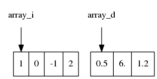
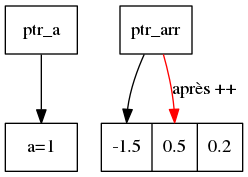
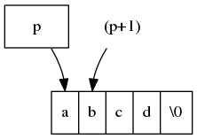
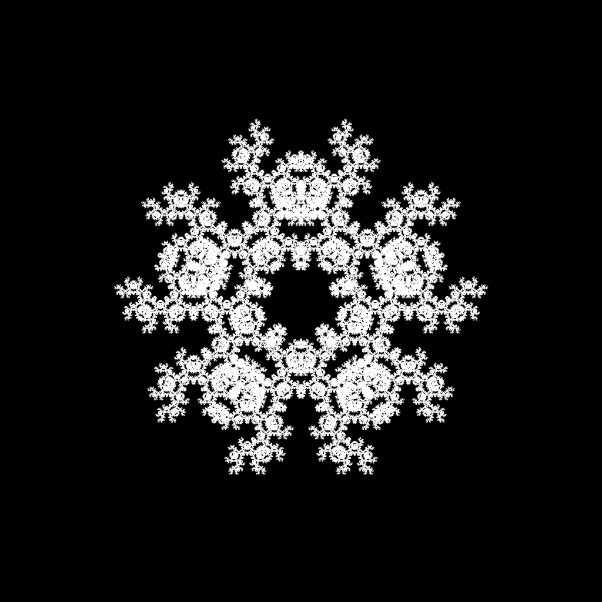

Initiation au C++
Bernard Hugueney
Created: 2018-01-02 Tue 23:32
1 Méta
1.1 Objectifs
Faciliter l'apprentissage ultérieur du C++
1.2 Prérequis
Comprendre le langage Python et savoir écrire des programmes en Python
1.3 Méthode
Pratique : Essayer d'executer les fragments de code, par exemple sur :
2 Qu'est-ce que le C++ ?
Par rapport à Python, le C++ est un langage :
- compilé
- avec typage statique
2.1 Compilation
Le code C++ n'est pas exécuté directement et il n'y a pas de console (REPL) C++. Les programmes en C++ sont "traduits" (compilés) en exécutables. https://godbolt.org/
2.1.1 Inconvénients de la compilation
- pas d'interactivité
- les exécutables sont spécifiques à l'architecture (CPU & Système d'exploitation)
2.1.2 Avantages de la compilation
- rapidité d'exécution
- permet de tirer parti du typage statique pour avoir des erreurs de compilations (!)
- (permettra l'écriture de programme parallèles)
2.1.3 compilation en pratique
utilisation d'un compilateur sur chaque fichier source, puis édition de liens.
gcc fichier-source.cxx -o fichier-executable
2.2 Typage statique
Toutes les expressions ont un type connu à la compilation (avant l'exécution !)
def is_inside_unit_circle(x, y): return x*x + y*y < 1
bool is_inside_unit_circle(double x, double y){ return x*x + y*y < 1; }
2.2.1 Typage générique
template<T> bool is_inside_unit_circle(T x, T y){ return x*x + y*y < 1; } bool test= is_inside_unit_circle(0.1, 0.1);
2.2.2 Typage automatique
std::string str("test"); auto str2=str + " concat"; int i= 5; auto j = i/2; std::cout<< str2 << " "<< j;
test concat 2
2.2.3 conversions de type
-Wconversion -Werror
int c= 13.5f; float d= c/2; unsigned int e = -1; std::cout<< c << " " << d << " " << e <<std::endl;
error: conversion to ‘int’ alters ‘float’ constant value [-Werror=float-conversion]
int c= 13.5f;
^~~~~
cc1plus: all warnings being treated as errors
int c= static_cast<int>(13.5f); float d= static_cast<float>(c/2); unsigned int e = static_cast<int>(-1); std::cout<< c << " " << d << " " << e <<std::endl; std::cout<< (-1 % 4) <<std::endl;
| 13 | 6 | 4294967295 |
| -1 |
2.3 Le type peut indiquer qu'une valeur est constante
import math math.pi= 2 print(math.cos(math.pi/2))
0.5403023058681398
const double pi= std::acos(-1); // nice try pi= 2.0; std::cout << std::cos(pi/2.) << std::endl;
error: assignment of read-only variable ‘pi’
pi= 2.0;
^~~
2.4 Erreurs de compilation
Détection automatique des erreurs de type.
Mieux qu'une erreur à l'exécution !
n= input("Entrez le nombre de fléchettes à lancer") inside= 0 for i in range(n): if is_inside_unit_circle(random.random(), random.random()): inside +=1 print("Sur {} fléchettes, {} à l'intérieur. Pi ~ {}".format(n, inside, 4 * inside/n) )
2.5 Performance
import random import time def is_inside_unit_circle(x, y): return x*x + y*y < 1 n= 100000000 #int(input("Entrez le nombre de fléchettes à lancer")) inside= 0 start= time.time() for i in range(n): if is_inside_unit_circle(random.random(), random.random()): inside +=1 print("simulation faite en {} secondes.".format(time.time() - start)) print("Sur {} fléchettes, {} à l'intérieur. Pi ~ {}".format(n, inside, 4 * inside/n) )
simulation faite en 63.49054312705994 secondes. Sur 100000000 fléchettes, 78538271 à l'intérieur. Pi ~ 3.14153084
#include <iostream> #include <random> #include <chrono> bool is_inside_unit_circle(double x, double y){ return x*x + y*y < 1; } int main(int arc, char* argv[]){ std::default_random_engine generator; std::uniform_real_distribution<double> distribution(0.0,1.0); //std::cout<<"Entrez le nombre de fléchettes à lancer :"; long n= 100000000; // std::cin >> n ; long inside= 0; auto start= std::chrono::system_clock::now(); for(long i=0; i != n; ++i){ if (is_inside_unit_circle(distribution(generator), distribution(generator))){ ++inside; } } auto nanosecs= std::chrono::system_clock::now() - start; std::cout<<"simulation faite en "<< nanosecs.count()/10.e9 << " secondes."<<std::endl; std::cout<<"Sur "<<n<<" fléchettes, "<< inside << " à l'intérieur. Pi ~ " << (4. * inside)/n << std::endl; }
simulation faite en 0.209304 secondes. Sur 100000000 fléchettes, 78544111 à l'intérieur. Pi ~ 3.14176
2.6 Remarques sur la performance en python
Il est possible d'écrire des programmes performants en Python !
En utilisant des bibliothèques qui ne sont pas implémentées en python (e.g.
Numpy) (Elles sont souvent implémentées en C++ !)
3 Un langage polyvalent et multi-paradigme
On peut programmer à peu près n'importe quoi et n'importe comment !
Le C++ a beaucoup évolué depuis 20 ans ! (→ chercher des sources récentes)
4 Programmation Orientée Objet
Le C++ permet la Programmation Orientée Objet, mais nous ne nous y intéresserons pas (cf. cours de Java).
5 Remarques générales
Pour utiliser des bibliothèques, on utilise la directive #include.
Le programme est une fonction int main(int argc, char* argv[]){}.
6 Types
6.1 types primitifs
6.1.1 entiers
Généralement, on utilise des types qui ne sont pas précisément spécifiés pour pouvoir correspondre avec l'architecture de compilation (e.g. 32 bits vs 64 bits).
charshortintlonglong long
signed (défaut) ou unsigned.
std::size_t pour les indices positifs.
std::cout<<"sizeof(char): "<< 1 <<std::endl; std::cout<<"sizeof(short): "<< sizeof(short) <<std::endl; std::cout<<"sizeof(int): "<< sizeof(int) <<std::endl; std::cout<<"sizeof(long): "<< sizeof(long) <<std::endl; std::cout<<"sizeof(long long): "<< sizeof(long long) <<std::endl; std::cout<<"sizeof(std::size_t): "<< sizeof(std::size_t) <<std::endl;
sizeof(char): 1 sizeof(short): 2 sizeof(int): 4 sizeof(long): 8 sizeof(long long): 8 sizeof(std::size_t): 8
6.1.2 virgule flottante
floatdouble
Comme en python :
if(0.1 * 3 == 0.3){ std::cout<<"on peut rêver…" <<std::endl; }else{ std::cout<<"… ou pas !" <<std::endl; }
… ou pas !
6.1.3 booléen
6.2 Tableaux, pointeurs, itérateurs
6.2.1 Tableaux
valeurs de même type, contiguës en mémoire la valeur représentant le tabeau est en fait son adresse en mémoire (pas d'information sur le nombre d'éléments !)

int array_i[]={1,0,-1,2}; double array_d[]={0.5, 6.,1.2}; std::cout <<'@'<<array_i<<": "<<array_i[0]<<", @"<<(array_i+1)<<": "<<array_i[1]<<std::endl; std::cout <<'@'<<array_d<<": "<<array_d[0]<<", @"<<(array_d+1)<<": "<<array_d[1]<<std::endl;
@0x7ffcc6f00970: 1, @0x7ffcc6f00974: 0 @0x7ffcc6f00950: 0.5, @0x7ffcc6f00958: 6
6.2.2 Pointeurs
adresse (typée !) en mémoire

int a=0; int *ptr_a = &a; *ptr_a = 2; std::cout<<"a= "<< a << std::endl; double arr[] = {-1.5, 0.5, 0.2}; double * ptr_arr= arr; // = &(arr[0]); *ptr_arr=0.25; ++ptr_arr; *ptr_arr= 1.; std::cout<< "arr[0]:" << arr[0]<<", arr[1]:" << arr[1]<< std::endl; std::cout<< "ptr_arr[-1]:" << ptr_arr[-1]<<", ptr_arr[0]:" << ptr_arr[0]<< std::endl;
a= 2 arr[0]:0.25, arr[1]:1 ptr_arr[-1]:0.25, ptr_arr[0]:1
6.2.3 tableaux de tabeaux
int a[4][3]={{-1, 4, -1}, {0,1,3,}, {2, 1,0}, {0,0,0}}; std::cout<< "a[0][1]="<< a[0][1]<<" **a="<< **a << std::endl;
a[0][1]=4 **a=-1

6.2.4 Itérateurs
Généralisation du concept de pointeur pour traverser des ensembles de valeurs.
std::unordered_set<std::string> data({"red", "blue", "green"}); for(auto it= data.begin(); it != data.end(); ++it){ std::cout<< *it<<" ,"; }
green ,blue ,red ,
6.3 chaîne de caractères
pointeur sur un tableau de caractères (char) terminé par '\0'

- Attention aux caractères non ASCII !
char const * const str_ascii="e"; char const * const str_not_ascii="é"; std::cout << "strlen("<< str_ascii <<")="<<std::strlen(str_ascii) << std::endl; std::cout << "strlen("<< str_not_ascii <<")="<<std::strlen(str_not_ascii) << std::endl;
strlen(e)=1 strlen(é)=2
les opérations s'appliquent aux pointeurs:
char * str="toto"; char str2[]= {'t','o','t','o', '\0'}; std::cout<<"str:"<<str<<" str2:"<<str2<<" (str == str2): "<< (str == str2)<< std::endl; char* str3= str2; str3[1]='i'; std::cout<<"str2:"<<str2<<std::endl;
str:toto str2:toto (str == str2): 0 str2:tito
6.4 std::string
std::string : classe permettant de faire de opération sur des chaîne de caractères (par exemple les copier et les comparer !)
Nécessite un #include <string>.
#include <iostream> #include <string> int main(int argc, char* argv[]){ std::string str="toto"; char tmp[]= {'t','o','t','o', '\0'}; std::string str2=tmp ; std::cout<<"str:"<<str<<" str2:"<<str2<<" (str == str2): "<< (str == str2)<< std::endl; std::string str3= str2; str3[1]='i'; std::cout<<"str2:"<<str2<<std::endl; }
str:toto str2:toto (str == str2): 1 str2:toto
7 Syntaxe
7.1 instructions
séparées par des ;
7.2 blocs de code
Délimités par des { et } et non pas indiqués par l'indentation (qui reste
utilisées, mais seulement pour permettre la visualisation).
while x % 2 == 0: if x > 0: print("strictement positif") elif x < 0: print("strictement négatif") else: print("nul")
while(x % 2 == 0){ if (x > 0){ std::cout<<"strictement positif"<<std::endl; }else if (x < 0){ std::cout<<"strictement positif"<<std::endl; }else{ std::cout<<"nul"<<std::endl; } }
7.3 ATTENTION aux blocs "manquants" !
Les blocs sont syntaxiquement facultatifs.
Une instruction vide ; est valide.
int x= -1; if( x > 0) std::cout << "positif" << std::endl; std::cout << "still positif ?" << std::endl; std::cout << "not indented" << std::endl;
still positif ? not indented
int x= -1; if( x > 0); std::cout << "positif" << std::endl; std::cout << "still positif ?" << std::endl; std::cout << "not indented" << std::endl;
positif still positif ? not indented
7.4 redéfinition d'opérateurs
Le sens de certain opérateurs dépend de ce quoi à ils s'appliquent !
<<, *,…
int a=1; a= a << 1; int *ptr_a=&a; a= a * *ptr_a; std::cout << "a="<< a << std::endl;
a=4
7.5 Exécution conditionnelle : if
L'expression testée est fausse si elle vaut 0, vraie sinon.
int i=55; if(i){ std::cout<< i << " est vrai" <<std::endl; }else{ std::cout<< i << " est faux" <<std::endl; } std::cout<< "true vaut "<< true << std::endl;
55 est vrai true vaut 1
7.6 Évaluation conditionnelle : ?:
l'expression ( e ? t : v) est équivalente à l'expression python scr_python[:export code]{t if e else v}
int i=55; std::cout<< i << " est "<< ( i ? "vrai" : "faux") <<std::endl; std::cout<< "true vaut "<< true << std::endl;
55 est vrai true vaut 1
7.7 Exécution conditionnelle : switch
branchement conditionnel selon différentes valeurs entières pour une expression testée.
Attention au break !
int i= 10; switch (i){ case 0: { std::cout<< " i vaut zéro"; break;} case 10: {std::cout <<" i vaut dix"; } case 20: {std::cout <<" i vaut vingt (ou j'ai oublié le break avant)"; break;} default:{ std::cout << "i vaut "<<i;} }
i vaut dix i vaut vingt (ou j'ai oublié le break avant)
7.8 Boucle while
Comme la boucle while en python, mais il existe aussi une variante do{}while();
int next; do{ next= std::rand() % 100; }while((next % 2 == 0) || (next % 3 == 0)); std::cout<<next<<" n 'est divisible ni par 2 ni par 3";
83 n 'est divisible ni par 2 ni par 3
7.9 Boucle for
for( initialisation; test; mise à jour)
for(std::size_t i=0; i != 5; ++i){ std::cout<<i<<' '; } std::cout<<std::endl; char* str="toto"; for(int i=0; str[i] != '\0'; ++i){ std::cout<<str[i]<< ' '; } std::cout<<std::endl; for(char* ptr=str; *ptr; ++ptr){ std::cout<< *ptr << '_'; } std::cout<<std::endl;
0 1 2 3 4 t o t o t_o_t_o_
7.10 Boucle for sur une séquence
Comme en python mais avec typage :
int array[]={1, 5, 7, -3}; for(int v : array){ std::cout<< v <<','; }
1,5,7,-3,
8 Passages d'arguments
Les arguments sont passés par valeur sauf si l'on indique un passage par référence.
void par_valeur(int i){ i+= 1; } void par_reference(int& i){ i+= 1; } int main(int argc, char* argv[]){ int j= 1; par_valeur(j); std::cout<< "j= "<< j << std::endl; par_reference(j); std::cout<< "j= "<< j << std::endl; }
j= 1 j= 2
9 Bibliothèque standard
9.1 Structures de données
9.1.1 tuple
L'utilisation de la classe std::tuple nécessite #include <tuple>
std::tuple<int, float> t_if(2, 0.5f); std::tuple<int, std::string> t_is= std::make_tuple(0, "toto"); std::get<0>(t_is)= std::get<0>(t_if); std::cout<< std::get<0>(t_is)<<','<<std::get<1>(t_is)<<std::endl;
2,toto
9.1.2 array
L'utilisation de la classe std::array nécessite #include <array>.
La taille fait partie du type (donc fixe). Joue pour les tableaux le
même rôle que std::string pour les chaînes de
caractères.
std::array<int, 3> a{-1, 2, 0}; auto b= a; std::array<int, 3> c{-1, 2, 0}; b[0]= 5; std::cout << a[0] << ", (a == c): "<<(a== c)<<std::endl;
-1, (a == c): 1
9.1.3 vector
std::vector est semblable aux listes de python, mais avec éléments de même type.
Nécessite #include <vector>
std::vector<int> v_i; v_i.push_back(1); v_i.push_back(2); v_i.push_back(4); v_i.pop_back(); std::cout<<v_i.size()<<" elts:"<<v_i[0]<<","<<v_i[1]<<std::endl;
2 elts:1,2
9.1.4 list
std::list permet des opérations efficaces en tête de liste (front). Ne permet pas un accès aléatoire.
Nécessite #include <list>
std::list<int> c; c.push_front(1); c.pop_back(); c.push_front(2); c.push_front(4); std::cout<<"c.empty():"<<c.empty()<<", elts:"; auto it=c.begin(); std::cout<< *it<<','; ++it; std::cout<<*it<<std::endl;
c.empty():0, elts:4,2
9.1.5 unordered_map
std::unordered_map est équivalent aux dictionnaires de python, mais avec des types.
Nécessite #include <unordered_map>.
std::unordered_map<std::string, int> name_to_score; name_to_score["toto"]=5; name_to_score["bernard"]= 32; name_to_score["patrick"]= 64; for(auto const & kv : name_to_score){ std::cout<<kv.first<<" : "<<kv.second<<std::endl; }
patrick : 64 toto : 5 bernard : 32
9.1.6 unordered_set
std::unordered_set ermet de tester efficacement si un ensemle contient un élément, et d'éviter les doublons.
std::unordered_set<std::string> names; names.insert("toto"); names.insert("titi"); names.insert("toto"); std::string to_find("titi"); if(names.find(to_find) != names.end()){ std::cout << to_find <<" trouvé dans "; } for(auto name : names){ std::cout<< name <<", "; }
titi trouvé dans titi, toto,
9.2 Itérateurs
Les structures de données, entre autres !, donnent accès aux éléments à travers
des iterateurs. Ils sont catégorisés selon les opérations qu'ils permettent
(en plus de l'accès par l'opérateur ,* et de la
comparaison par l'opérateur == ).
9.2.1 forward iterator
Incrémentation pour passer à l'élément suivant avec l'opérateur
++.
std::ostream_iterator<int> out(std::cout, ", "); for(int i=0; i != 5; ++i, ++out){ *out= i; }
0, 1, 2, 3, 4,
9.2.2 Bidirectional iterator
En plus des opérations du forward iterator, on peut aussi décrémenter pour aller à l'élément précédant :
std::list<int> c{2, 3, 5, 7}; auto it=c.begin(); std::cout<< *it <<','; ++it; std::cout<< *it <<std::endl; --it; std::cout<< *it <<std::endl;
2,3 2
9.2.3 Random access iterator
En plus des opérations du bidirection iterator, on peut aller directement à
n'importe quel élément situé à n positions dans un sens ou dans l'autre (comme
par opérations arithmétiques sur des pointeurs) :
std::vector<int> v_i {2, 3, 5, 7, 11}; auto it= v_i.begin(); it += 2; std::cout<< *it <<' '<< *(it-2) <<' '<< *(it + 2) <<std::endl;
5 2 11
9.3 Algorithmes
On peut appliquer des algorithmes sur n'importe quel intervalle de n'importe
quelle structure de données grâce à des intervalles \( \left[ begin, end \right[
\) et des itérateurs en écriture. Ils nécessire l'inclusion du header
correspondant avec #include <algorithm>
9.3.1 copy
std::vector<int> v{2, 3, 5, 7, 11}; std::copy(v.begin(), v.end(), std::ostream_iterator<int>(std::cout, ", "));
2, 3, 5, 7, 11,
9.3.2 shuffle
std::shuffle nécessite un générateur de nombres aléatoires (Random Numbers Generator), avec
#include <random>. L'initialisation de celui-ci peut
changer en se basant sur l'instant au moment d'exécution (cf. #include <chrono>.
std::vector<int> v{2, 3, 5, 7, 11}; std::size_t seed = std::chrono::system_clock::now().time_since_epoch().count(); std::shuffle(v.begin(), v.end(), std::default_random_engine(seed)); std::copy(v.begin(), v.end(), std::ostream_iterator<int>(std::cout, ", "));
9.3.3 sort
On peut trier un intervalle d'éléments d'une séquence avec std::sort. La relation d'ordre est paramétrable.
std::vector<int> v{7, 3, 2, 5, 11}; std::size_t seed = std::chrono::system_clock::now().time_since_epoch().count(); std::shuffle(v.begin(), v.end(), std::default_random_engine(seed)); std::sort(v.begin(), v.end()); std::copy(v.begin(), v.end(), std::ostream_iterator<int>(std::cout, ", "));
10 Sémantique
Par défaut les valeurs sont passées par copie.
10.1 passage par copie
void f(int i){ i+=1; } void f(std::vector<int> v){ v.push_back(0); } int main(int argc, char* argv[]){ int i=0; f(i); std::cout<< i <<std::endl; std::vector<int> v{1, 2}; f(v); std::cout<< v.size() << std::endl; }
0 2
10.2 passage par pointeur
Attention, si le pointeur est invalide (NULL ou nullptr), tout utilisation (sauf test de comparaison avec nullptr) provoquera un plantage !
void f(int* i){ *i +=1; } void f(std::vector<int>* v){ (*v).push_back(0); v->push_back(0); } int main(int argc, char* argv[]){ int i=0; f(&i); std::cout<< i <<std::endl; std::vector<int> v{1, 2}; f(&v); std::cout<< v.size() << std::endl; }
1 4
10.3 passage par référence
On peut vouloir :
- éviter de payer les coûts d'une copie
- assurer qu'il y a bien une valeur (pas un pointeur invalide)
- permettre la modification d'une variable passée en argument
→ passage par référence
void f(int& i){ i +=1; } void f(std::vector<int>& v){ v.push_back(0); } int main(int argc, char* argv[]){ int i=0; f(i); std::cout<< i <<std::endl; std::vector<int> v{1, 2}; f(v); std::cout<< v.size() << std::endl; }
1 3
11 Exemples
Traductions en C++ de fonctions vues en DS.
11.1 Limites
std::tuple<int> limites(std::vector<int> const& xs){ int min_x= xs[0]; int max_x= xs[0]; for(int x : xs){ if(x < min_x){ min_x= x; } if( x > max_x){ max_x= x; } } return std::make_tuple(min_x, max_x); } template<typename T> std::tuple<T> limites_generic(std::vector<T> const& xs){ T min_x= xs[0]; T max_x= xs[0]; for(T x : xs){ if(x < min_x){ min_x= x; } if( x > max_x){ max_x= x; } } return std::make_tuple(min_x, max_x); }
template<typename It> std::tuple<decltype(*It), decltype(*It)> limites_iter(It begin, It end){ typedef decltype(*It) T; T min_x= *begin; //!!! T max_x= *begin; for(It it=begin; it != end; ++it){ if(*it < min_x){ min_x= *it; } if( *it > max_x){ max_x= *it; } } return std::make_tuple(min_x, max_x); }
template<typename It> std::tuple<decltype(*It), decltype(*It)> limites_iter2(It begin, It end){ It min_it= begin; //!!! It max_it= begin; for(It it=begin; it != end; ++it){ if(*it < *min_it){ min_it= it; } if( *it > *max_it){ max_it= it; } } return std::make_tuple(*min_it, *max_it);// !!! } template<typename It> std::tuple<It, It> limites_idiomatic(It begin, It end){ It min_it= begin; //!!! It max_it= begin; for(It it=begin; it != end; ++it){ if(*it < *min_it){ min_it= it; } if( *it > *max_it){ max_it= it; } } return std::make_tuple(min_it, max_it); } // En fait, std::minmax_element() existe !
11.2 Fusion
// char != code point ! std::string fusion(std::string const& str1, std::string const& str2){ std::string res; if(str1.size() == str2.size()){ for(auto it1= str1.begin(), it2= str2.begin(); it1 != str1.end(); ++it1, ++it2){ res.push_back(*it1); res.push_back(*it2); } } return res; } // char != code point ! template<typename It1, typename It2, typename Out> Out fusion_idiomatic(It1 begin1, It1 end1, It2 begin2, It2 end2, Out out){ if(std::distance(begin1, end1)== std::distance(begin2, end2)){ for(; begin1 != end1; ++begin1, ++begin2){ *out= *begin1; ++out; *out= *begin2; ++out; } } return out; }
11.3 Palindrome
bool palindrome(std::string const& str){ for(std::size_t i= 0; i != str.size()/2; ++i){ if(str[i] != str[str.size()-i]){ return false; } } return true; } bool palindrome2(std::string const& str){ auto it= str.begin(); auto r_it= str.rbegin(); for(std::size_t i= 0; i != str.size()/2; ++i, ++it, ++r_it){ if(*it != *r_it){ return false; } } return true; } bool palindrom_idiomatic(It begin, It end){ std::size_t const half= std::distance(begin, end)/2; std::reverse_iterator<It> rbegin(end); for(std::size_t i=0; i != half; ++i, ++begin, ++rbegin){ if(*begin != *rbegin){return false;} } return true; }
11.4 Extraction de données
typedef std::tuple<std::string, std::string, double> data_t; std::vector<data_t> extraction(std::vector<data_t> const& xs, std::string crit){ std::vector<data_t> res; for(data_t x : xs){ if(std::get<0>(x) == crit){ res.push_back(x); } } return res; } template<typename It, typename Out> Out extraction_idiomatic(It begin, It end, Out out, std::string crit){ for(; begin != end; ++begin){ if(std::get<0>(*begin) == crit){ *out= *begin; ++out; } } return out; } /* std::copy_if(data.begin(), data.end(), std::back_inserter(selection) , [&category](data_t const& x)->bool{return std::get<0>(x) == category;}) */
typedef tuple<std::string, std::string, double> data_t; std::vector<data_t> extract_dict(std::unordered_map<std::string, std::vector<data_t> dict, std::string cat){ return dict[cat]; }
11.5 Pliage
void pliage(std::string str, std::size_t n){ for(std::size_t i(0); i != str.size(); ++i){ if( (i != 0) && (i % n == 0)){ std::cout << std::endl; } std::cout<<str[i]; } } template<typename In, typename Out> Out pliage_idiomatic(In begin, In end, Out out, std::size_t n){ for(std::size_t i(0); begin != end; ++begin){ if((i != 0) && (i % n == 0)){ *out= '\n'; ++out; } *out= *begin; ++out; } return out; }
12 Programmes
12.1 Pendu
On eut essayer de réécrire le programme de jeu de pendu en C++. Cependant, la notion de lettre n'étant pas gérée (ne pas confondre lettres et caractères !), le programme ne marchera pas avec des lettres codées sur plusieurs octets (accentuées par exemple). Pour ce genre de programmes sans impératifs de performance, python est donc plus adapté.
#include <iostream> #include <string> #include <vector> std::string initialiser_mot_mystere(std::string const& mot){ std::string res; for(std::size_t i=0; i != mot.size(); ++i){ res.push_back('_'); } return res; }
void affichage_mot_mystere(std::string const& mot_mystere){ for(char const& c : mot_mystere){ std::cout << c << ' '; } std::cout<<std::endl; } void affichage_coups_restants(int nb_coups_restants){ std::cout << "Il vous reste " << nb_coups_restants << " coups."<<std::endl; } char saisie_joueur2(){ std::string saisie; while( saisie.size() == 0){ std::cout << "Lettre å tester :"<<std::endl; std::cin >> saisie; std::cout << std::endl; } return saisie[0]; }
std::string mise_a_jour_mot_mystere(char lettre, std::string const& mot, std::string const& mot_mystere){ std::string res; for(std::size_t i=0; i != mot.size(); ++i){ res.push_back(mot[i] == lettre ? lettre : mot_mystere[i]); } return res; } std::string choix_joueur2(std::string const& mot, std::string const& mot_mystere , int nb_coups_restants){ affichage_mot_mystere(mot_mystere); affichage_coups_restants(nb_coups_restants); char lettre_saisie= saisie_joueur2(); return mise_a_jour_mot_mystere(lettre_saisie, mot, mot_mystere); }
bool test_jeu_fini(std::string const& mot_mystere, int nb_coups_restants){ if(mot_mystere.find('_') == std::string::npos){ std::cout<< "Félicitations! Vous avez trouvé le mot mystère."<< std::endl; return true; }else if(nb_coups_restants == 0){ std::cout<< "Félicitations! Vous avez trouvé le mot mystère."<< std::endl; return true; } return false; }
int main(int argc, char* argv[]){ while(true){ std::cout << "*************************************" << std::endl << "Bienvenu sur le jeu du Pendu" << std::endl << "1 - Commencer une nouvelle partie" << std::endl << "0 - Quitter" << std::endl << "*************************************"<< std::endl; int choix; std::cout<<"Faites votre choix"<<std::endl; std::cin >> choix; if( choix == 0){ break; } std::cerr<<" choix:" << choix <<std::endl; if( choix != 1){ continue; } std::string mot; std::getline(std::cin, mot);// flush line break while( mot.size() ==0){ std::cout << "Joueur 1 - Saisissez le mot mystère:" << std::endl; std::getline(std::cin, mot); } std::string mot_mystere= initialiser_mot_mystere(mot); for(std::size_t i=0; i != 100; ++i){ std::cout << std::endl; } for(int nb_coups_restants= 10; !test_jeu_fini(mot_mystere, nb_coups_restants); --nb_coups_restants){ mot_mystere= choix_joueur2(mot, mot_mystere, nb_coups_restants); } } }
12.2 Chaos Game
Soit le programme suivant en python, qui implémente un dessin paramétrable suivant le principe du chaos game. On peut lancer ce programme de la façon suivante :
python ./chaos-game.py 4 >chaos-game-py-frame-4.pgm
et obtenir le fichier image chaos-game-py-frame-4.pgm au format PGM.
Avec le program convert d'ImageMagick, on peut convertir à la volée au format PNG :
python ./chaos-game.py 5 | convert pgm:- chaos-game-py-frame-5.pgm
pour d'obtenir l'image suivante :

On voudrait faire varier progressivement le paramètre de 3.00 à 8.00 avec un incrément de 0.01 pour générer une animation. Comme le programme python met 2 minutes par image, les 500 images nécessaires prendraient 1000 minutes, soit beaucoup trop longtemps ! On va donc réécrire le programme en C++.
12.2.1 Programme en Python
import sys import math import random def midpoint(p0, p1): (x0, y0)= p0 (x1, y1)= p1 return ((x0 + x1)/2, (y0 + y1)/2) def rotate(center, a, p): (x0, y0)= center (x, y)= p x-= x0 y-= y0 return (x0+math.cos(a)*x - math.sin(a)*y, y0+math.sin(a)*x + math.cos(a)*y) def polygon(center, p, n): res=[] for i in range(math.ceil(n)): res.append(p) p= rotate(center, 2*math.pi/n, p) return res def brighten(screen, p, white): (x,y)= p x= int(x) y= int(y) screen[y][x]= min(screen[y][x]+1, white) def create_screen(init, w, h): return [[init for x in range(w)] for y in range(h)] def print_image(white, screen): print("P2") print(len(screen[0]), len(screen[1]), sep=" ") print(white) for line in screen: for c in line : print(c, end=" ") print() def main(argv): n_edges= float(argv[0]) if len(argv)>0 else 3. w= 1024 h= 1024 black= 0 white= 255 n= int(n_edges * ( int(argv[1] if len(argv) > 1 else 10000000))) poly= polygon((w/2, h/2), (w/2, 1.75*h/2), n_edges) screen= create_screen(black, w, h) prev_idx= 0 p= poly[prev_idx] for i in range(n): idx= random.randrange(len(poly)) while idx == prev_idx: idx= random.randrange(len(poly)) prev_idx= idx p= midpoint(poly[idx], p) brighten(screen, p, white) print_image(white, screen) if __name__ == "__main__": main(sys.argv[1:])
12.2.2 Réécriture partielle en C++
Au lieu de 17 heures pour générer les 500 images, on peut réduite le temps d'exécution à 17 minutes sur la base du programme suivant.
#include <iostream> #include <tuple> #include <cmath> #include <cstdlib> #include <vector> /* STEPS=100; PREFIX=chaos-game-frame-${STEPS} for i in $(seq $((3 * $STEPS)) $((8 * $STEPS))); do ./chaos-game-double $(bc -l <<< "scale=2;$i / $STEPS") | convert pgm:- ${PREFIX}-$i.png; done ffmpeg -start_number 300 -i ${PREFIX}-%03d.png -filter_complex "[0:v]reverse,fifo[r];[0:v][r] concat=n=2:v=1 [v]" -map "[v]" \ chaos-game.mp4 */ typedef std::tuple<double, double> point_t; point_t midpoint(point_t const& p0, point_t const& p1){ // TODO } point_t rotate( point_t const& center, float a, point_t const& p){ double const x= std::get<0>(p)-std::get<0>(center); double const y= std::get<1>(p)-std::get<1>(center); return point_t(std::get<0>(center)+std::cos(a)*x - std::sin(a)*y , std::get<1>(center)+std::sin(a)*x + std::cos(a)*y); } const double pi= std::atan(1)*4; std::vector<point_t> polygon(point_t const& center, point_t p, float n){ std::vector<point_t> res; for(int i= 0; i < std::ceil(n); ++i){ res.push_back(p); p= rotate(center, 2*pi/n, p); } return res; } // TODO implementer brighten std::vector<std::vector<int> > create_screen(int init, std::size_t w, std::size_t h){ std::vector<std::vector<int> > screen(h, std::vector<int>(w, init)); return screen; } template<typename C> std::ostream& operator<<(std::ostream& os, std::vector<std::vector<C> > const& screen){ for(auto row : screen){ for(auto c : row){ os << c << ' '; } } return os; } int main(int argc, char* argv[]){ float n_edges= argc > 1 ? std::atof(argv[1]) : 3.f; int n_e = static_cast<int>(n_edges); int const w= 1024; int const h= 1024; int const white= 255; int const black= 0; std::size_t const n= (argc > 2 ? std::atol(argv[2]) : 10000000)*n_edges; auto poly= polygon(point_t(w/2, h/2), point_t(w/2, 1.75*h/2), n_edges); auto sc= create_screen(black, w, h); std::size_t prev_idx= 0; point_t p= poly[0]; for(std::size_t i=0; i != n; ++i){ std::size_t idx=0; do{ idx= std::rand()%poly.size(); }while(idx == prev_idx); p= midpoint(poly[idx], p); prev_idx= idx; brighten(sc, p, white); } std::cout << "P2" << std::endl << w << ' ' << h << std::endl << white << std::endl; std::cout<< sc << std::endl; return 0; }